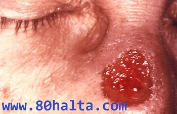

سىفلىس __ بۇرغۇسىمان تەنچىنىڭ ئادەم بەدىنىدىكى يۇقۇملاشتۇرۇشتىن كېلىپ چىقىدىغان بىر خىل سوزۇلما خارەكتېرلىك تارقىلىدىغان كېسەللىكتۇر.ئۇ بەدەندىكى ھەر قايسى توقۇلمىلارغا ، ئەزالارغا سوقۇنۇپ كىرەلەيدۇ ، كىلىنكىلىق ئىپادىسى كۆپ خىل بولۇپ ، ھەتتا ئۇزۇن مۇددەت يۇشۇرۇن ھالەتتىمۇ تۇرىدۇ .
ئېتئولوگىيىسى :
ئاقۇش بۇرغۇسىمان تەنچىسى ( سىفلىس بۇرغۇسىمان تەنچىسى دەپمۇ ئاتىلىدۇ )(梅毒的病原体是一种螺旋体，梅毒螺旋体是一种小而纤细的呈螺旋状的微生物，长度为5—20nm， 直径<0.2nm。它有6—12个螺旋， 肉眼看不到，在光镜暗视野下，). سىفلىس بۇرغۇسىمان تەنچە بەدەن سىرتىدا ئاسان ياشلىيالمايدۇ . 48 سىلسىيە گىرادۇستا ئاران يېرىم سائات ياشىيالايدۇ . قايناتقان ، قۇرغاق ، سوپۇن سۈيى ھەمدە ئادەتتىكى دېزىنفېكسىيە دورىلىرى بىلەن قىسقا ۋاقىت ئىچىدىلا ئۆلتۈرۋەتكىلى بولىدۇ . بىراق سوغۇققا چىداملىق .
يۇقۇش مەنبەسى :
بىمار بىردىنبىر يۇقۇملىنىش مەنبەسى ھېسابلىنىدۇ .
تارقىلىش يولى :
ئاساسەن جىنسىي مۇناسىۋەت ئارقىلىق يۇقىدۇ . ئۇنىڭدىن باشقا ، ئانىدىن بالىغا تارقىلىدۇ . ئاز قىسىمدىكىلەرگە باشقا يوللار ئارقىلىق يۇقىدۇ .
تارقىلىش ئالاھىدىلىكى :
قۇرامىغا يەتكەن جىنسىي ئىقتىدارى كۈچلۈكلەردە كۆپ كۆرۈلدۇ ، تارقاق تارقىلىشنى ئاساس قىلىدۇ .
كىلىنكىلىق ئىپادىسى :
سىفلىس تارقىلىش يولىنىڭ ئوخشىماسلىقىغا ئاساسەن ئىككىلەمچى سىفلىس ۋە تۇغما ( ھامىلىدىن تارقىلىش ) سىفلىس دەپ ئايرىلدۇ . كېسەل ئەھۋالىنىڭ تەرەقىياتىغا ئاساسەن دەسلەپكى دەۋىرلىك سىفلىس ۋە ئاخىرقى دەۋىرلىك سىفلىس دەپ ئايرىلدۇ (分早期梅毒和晚期梅毒) . دەسلەپكى دەۋىرلىك سىفلىس ( 1-دەۋىر 2- دەۋىردىكى سىفلىسلارنىمۇ ئۆزئىچىگە ئالىدۇ ) يۇقۇملاندۇرۇشچانلىققا ئىگە . ئاخىرقى دەۋىرلىك سىفلىسنىڭ ( 3- دەۋىر ) ئادەتتە يۇقۇملاندۇرۇشچانلىقى بولمايدۇ .
بىرىنچى دەۋىرلىك سىفلىس : ئاساسلىق كېسەل ئالامىتى قاتتىق شانكىر بولىدۇ ( 发生在感染后3周(10—30日之间)。在感染处出现一个硬的、无痛性的圆形结节). تازلىقى پاكىز بولمىغان جىنسىي مۇناسىۋەتتى كىيىن 2-4 ھەپتىدە پەيدا بولىدۇ . كۆپىنچە ئەرلەرنىڭ خەتنىلىكى ، تاجىسىمان ئېرىقچە ، بىغىش ، زەكەر بېشى قاتارلىق جايلاردا بولىدۇ . ئەر ئوخشاش جىنىسلىق مۇھەببەتلەشكۈچىلەردە مەقئەت ياكى تۈز ئۈچەيدە ، ئاياللاردا كۆپىنچە چوڭ-كىچىك لېۋىدە ، بالياتقۇ بويىدا پەيدا بولىدۇ . ئاز ساندىكىلەردە كالپۇكى ، يۇتقۇنچىقى قاتارلىقلاردا پەيدا بولىدۇ . تىپىك قاتتىق شانكىر 1-2 CM چوڭلۇقتا بولۇپ ، دۆگىلەك ياكى ئېللىپىس شەكىللىك كىلىدۇ .چېگىرىسى ئېنىق ، يارا يۈزى تېرە يۈزىدىن سەل كۆتۈرۈلگەن بولۇپ ، قىزىل گۆش رەڭلىك شەلۋەرەپ كېتىدۇ ياكى يارىغا ئايلىنىدۇ . يارا يۈزى پاكىز بولۇپ ، ئۈستىدىن ئاز مىقداردا ئاجراتما چىقىپ تۇرىدۇ . ئىچىدە كۆپ مىقداردا سىفلىس بۇرغىسىمان تەنچە ساقلىنىدۇ . تۇتقاندا كۆمۈرچەكتەك قاتتىق بولۇپ ، ئاغرىق سېزىم بولمايدۇ ( ئىككىلەمچى يۇقۇش ۋاقتى بولمايدۇ ) ، دائىم يالغۇز قوزغىلىدۇ . داۋالاتمىغاندا 3-8 ھەپتە ئىچىدە تەبىئى يوقىلىپ كىتىدۇ . قاتتىق شانكىر 10 كۈن ئەتراپىدا پەيدا بولۇپ ئوخشاش تەرەپتىكى چات ئارلىقى لىمفا تۇگۇنى چوڭىيىپ ، پۇرچاقچىلىك چوڭلۇقتا بولۇپ ، بىر قەدەر قاتتىق ئادەتتە باسقاندا ئاغرىمايدۇ ، كېيىن بىر تەرەپ چوڭلايدۇ .
ئىككىلەمچى دەۋىرلىك سىفلىس (二期梅毒) :
سىفلىس بۇرغىسىمان تەنچىسى يەرلىك ئورۇندىكى لىمفا تۈگۈنى ئارقىلىق قانغا كىرىدۇ . بەدەندە تارقالغاندىن كىيىن پۇتۇن بەدەندە ئىپادىلىنىدۇ . ئادەتتە يۇقۇملىنىپ 7-10 ھەپتە ياكى قاتتىق شانكىر پەيدا بولۇپ ، 6-8 ھەپتىدىن كېيىن پەيدا بولىدۇ . تېرە شىللىق پەردىنىڭ زەخمىلنىشى ئەڭ كۆپ كۆرۈلدۇ . ئۇنىڭ ئالاھىدىلىكى تېرە زەخمىسى كەڭ كۆلەمدە ھەم پاراللېل بولىدۇ . ئەسۋە (梅毒疹) خىلمۇ خىل بولۇپ ، يۇقۇملاندۇرۇشى كۈچلۈك بولىدۇ : (1) داغلىق ئەسۋە ( ئەتتىرگۈل ئەسۋە斑疹型梅毒疹 -玫瑰疹)، داغلىق دۆڭچە ئەسۋە ، ئالقان-تاپان سىفلىس ئەسۋە ، يىرىڭ قاپارتمىلىق ئەسۋە ؛ (2) سىرتقى جىنسى ئەزا – مەقەت ئەتراپى ھۆل سۆگەل تېرە كۆتۈرۈلگەن ، چىگرىسى ئېنىق ، يۇزى شەلۋەرىگەن بولۇپ چېڭسەيگە ئوخشاش؛ (3) كالپۇك ، تىل ، يۇتقۇنچاق ، قوۋۇز ئىچى يېنى ، بادام بەز ۋە كېكىرتەكلەردە شىللىق پەردە كۆرۈلدۇ . شىللىق پەردە قىزىرىپ ئىششىپ ، دۈەىلەك سۇ شەلۋەرلەش ھالىتدە بولۇپ ئۇستىگە كۇل رەڭ سۇيۇقلۇق يېوىۋالىدۇ . ئاغرىقنى ھېس قىلمايدۇ ؛ (4) چېكە ۋە ئارقا گەجگىسىدە داغ شەكىللىك چاچ چۈشۈپ ، قۇرۇت زېدىلىگەندەك بولىدۇ .
ئۈچىنچى دەۋىرلىك سىفلىس (三期梅毒) :
داۋالانمىغان ياكى داۋالاش قائىدىسىز بولغان بىمارلارنىڭ 30-40% دە ھەر خىل ھەركەتچان ئاخىرقى دەۋىرلىك سىفلىس پەيدا بولىدۇ .تېرە شىللىق پەردە ، سۆڭەك ، كۆز ، يۈرەك تومۇر ، نېرۋا سىستېنلىرىنى ئۆز ئىچىگە ئالغان زەخمىنى پەيدا قىلىپ ، بۇزغۇنچىلىق ئىنتايىن چوڭ بولىدۇ .
ئۈچۈنچى دەۋىرلىك سىفلىس دەرەخ يېلىمىدەك ئىششىق ۋە پاناق بۇرۇن :
دەرەخ يىلىمىدەك ئىششىق باش قىسمىدا كۆرۈلدۇ . دەسلەپتە تېرە ئاستىدا بىر قەدەر چوڭقۇر بارماقتىن چوڭىيىپ ، كېيىنچە ياڭاقتەك تۈگۈنچە پەيدا بولىدۇ . كۆپىنچە يەككە ھالەتتە بولىدۇ . تۈگۈنچە دەرەخ يېلىمىدەك قاتتىق بولغاچقا ، دەرەخ يېلىمى ئىششىقى دەپ ئاتىلىدۇ . تۈگۈنچە بارغانسىرى كرڭىيىپ ، ئوتتۇرۇسى نېكرۇزلىنىپ يارىنى شەكىللەندۇرىدۇ . چىگرىسى ئېنىق ، ئاستى قىسمى ئېگىز -پەس بولۇپ قىزىل گۆش رەڭلىك بولۇپ ، ئەسلىگە كىلىشى ناھايىتى ئاستا بولىدۇ ، قاتتىق شانكىر ئوتتۇرا قىسمىدا پەيدا بولۇپ ، سۆڭەك ماددىسىنى بۇزۇپ ، بۇرۇن ئىچى توسۇقنى بۇزۇۋېتىپ بۇرۇننى پاناقلاشتۇرۇپ قويىدۇ .
يۇشۇرۇن سىفلىس :
سىفلىسنى داۋالاتمىغانلىقتىن ياكى داۋالاش قائىدىسىز بولۇشتىن كېلىپ چىقىدۇ . كىلىنكىلىق كېسەل ئالامىتى بولمايدۇ . سىفلىس قان زەرداب رېئاكسىيىسى (RPR) مۇسپەت بولىدۇ . دەسلەپكى مەزگىللىك يۇشۇرۇن سىفلىس ( يۇقۇملىنىپ ئىككى يىل ئىچىدە ) ۋە ئاخىرقى دەۋىرلىك يۇشۇرۇن سىفلىس ( يۇقۇملىنىپ ئىككى يىلدى ئارتۇق ) دەپ ئايرىلدۇ .
تۇغما سىفلىس ( ھامىلىگە يۇققان سىفلىس 妊娠梅毒):
تۇققۇچىدا سىفلىس كېسىلى بولسا ، ھامىلە بالياتقۇ ئىچىدە قان ئارقىلىق يۇقۇملىنىدۇ .
دىئاگنۇز ئاساسلىرى :
سىفلىسقا دىئاگنوز قويۇشتا چوقۇم كېسەل تارىخى ، كىلىنكىلىق ئالامەتلىرى ھەمدە لابۇراتۇريەلىك تەكشۇرۇشكە ئاساسەن ئۇنۋېرسال تەھلىل قىلىپ ، ئەستايىدىل دىئاگنوز قويۇش كېرەك .
(1) نىكاھسىز جىنسىي ئۇچۇرشۇش تارىخى ياكى جىنسىي ھەمرىيىنىڭ سىفلىستىن يۇقۇملىنىش تارىخى بولۇشى كېرەك .
(2) ئىلگىرى سىفلىس دەپ تېرە زەخمىسى تارىخى ھەم داۋالاش ئەھۋالىنىڭ بار -يوقلۇقىنى ئىگەللەش كېرەك .
(3) تۇغما سىفلىس دەپ گۇمان قىلغۇچىلارنىڭ ئانىسىدا سىفلىس كېسەللىك تارىخى بار- يۇقلىقىنى ئىگىلىش لازىم .
لابراتۇريىلىك تەكشۇرۇش :
(1) كېسەل زەخمىسىدىكى سىفلىس بۇرغۇسىمان تەنچىسىنى تەكشۇرۇش __ دەسلەپكى دەۋىرلىك دىئاگنوز قويۇشتا ئىنتايىن موھىم قىممەتكە ئىگە .
(2) RPR ياكىTPUST تەجىربىلىرى مۇسپەت بولغاندا ، كىسەل تارىخى ھەمدە بەدەن تەكشۇرۇش تەنىجىسى سىفلىسقا مۇۋاپىق بولسا ، دىئاگنوزنى مۇقىملاشتۇرسا بولىدۇ ؛ ئەگەر كېسەل تارىخى ھەم بەدەن تەكشۈرۈش نەتىجىسى سىفلىسقا مۇۋاپىق كەلمىسە ، يەنىمۇ ئىلگىرلىگەن ھالدا سىفلىسقا خاس بولغان سېرۇلوگىيىلىك تەجىربە (TPPA) ئىشلىسە بولىدۇ .TPPA مۇسپەت بولسا دىئاگنوزنى مۇقىملاشتۇرۇش كېرەك .
ئالدىنى ئىلىش ۋە تىزگىنلەش :
ساغلاملىق تەربىيىسىنى ئېلىپ بېرىپ نىكاھتىن سىرتقى جىنسىي ھەركەتلەردىن -ساقلىنىش

بۇ كېسەلنى پۇتۇنلەي داۋالاپ ساقايتقىلى بولامدۇ
2011/04/19
بۇ كېسەلنى پۇتۇنلەي داۋالاپ ساقايتقىلى بولامدۇ
2011/04/19
مېنىڭ ھەدەم بۇ ۋېرۇس بىلەن يۇقۇملانغان ىدى مەن ۇنى بىلمەستە شىملىرىنى كىيىپتىكەنمەن ماڭىمۇ يۇقۇپ قالارمۇ
2011/04/19
مېنىڭ ھەدەم بۇ ۋېرۇس بىلەن يۇقۇملانغان ىدى مەن ۇنى بىلمەستە شىملىرىنى كىيىپتىكەنمەن ماڭىمۇ يۇقۇپ قالارمۇ
2011/04/19
بۇكىسەلنىڭ ئۇيغۇر تىبابىتىدە .ئۇنۇملۇك داۋاسى يوقمۇ..بولۇپمۇ 3.باسقۇچنىڭ…………يەنەبىر ئىش سىزنىڭچە بۇكىسەلنى .قايسى دوختۇرخانىدا داۋالاتسا .ەڭ مۇۋاپىق……….
2011/04/29
بۇكىسەلنىڭ ئۇيغۇر تىبابىتىدە .ئۇنۇملۇك داۋاسى يوقمۇ..بولۇپمۇ 3.باسقۇچنىڭ…………يەنەبىر ئىش سىزنىڭچە بۇكىسەلنى .قايسى دوختۇرخانىدا داۋالاتسا .ەڭ مۇۋاپىق……….
2011/04/29
بۇ كېسھل ساقيامدۇ؟
2011/06/07
بۇ كېسھل ساقيامدۇ؟
2011/06/07
ئەسسىلامۇ ئەلەيكۇم! مەن مۇشۇ كىسەل توغورلوق سىلەردىن مەسلىھەت سوراي دىگەن مىنىڭ بىر دوستۇم مۇشۇ كىسەل بىلەن يۇقۇملىنىپ قاپتىكەن دوختۇرلارمۇ شۇنداق دىئاگىنوز قويوپتۇ مۇشۇ كىسەلگە ساقايتىش توغورولوق بىرەرە دورا ياكى ئامال بارمۇ ۋە ياكى بىرەر نەرسىلەردىن پەرھىز تۇتامدۇ شۇ توغورولوق مەسىلىھەت بەرگەن بولساڭلار
2011/06/13
ئەسسىلامۇ ئەلەيكۇم! مەن مۇشۇ كىسەل توغورلوق سىلەردىن مەسلىھەت سوراي دىگەن مىنىڭ بىر دوستۇم مۇشۇ كىسەل بىلەن يۇقۇملىنىپ قاپتىكەن دوختۇرلارمۇ شۇنداق دىئاگىنوز قويوپتۇ مۇشۇ كىسەلگە ساقايتىش توغورولوق بىرەرە دورا ياكى ئامال بارمۇ ۋە ياكى بىرەر نەرسىلەردىن پەرھىز تۇتامدۇ شۇ توغورولوق مەسىلىھەت بەرگەن بولساڭلار
2011/06/13
بۇ كىسەلنى پۈتۈنلەي داۋالاپ ساقايتقىلى بولىدۇ. ئادەتتە پىنسىلىننى پەقەت بىر ئاي 3قىتىم كاسا ئوكۇل قىلىپ ئۇرغاندا كۈنلەرنىڭ ئۆتىشى تەخمىنەن بىريىلدىن كىيىن بۇ كىسەل پۈتۈنلەي ساقيىپ كىتىدۇ. بۇ بىر يىل جەريانىدا ھەر ئۈچ ئايدا بىر قىتىم قان تەكشۈرتۈپ تۇرۇش كېرەك. قايتا قوزغۇلۇش ئەھۋاللىرى كۆرۈلسە قايتا داۋالاش ئىلىپ بىرلىدۇ.
بۇ كىسەل ئۇنداق قورقۇنۇشلۇق ئەمەس، لىكىن ئەلۋەتتە ئۆزىمىزنىڭ تازلىق ئادىتىگە دىققەت قىلىپ، كىسەل بولۇپ قىلىشتىن ساقلانساق تىخىمۇ ياخشى.
پىنسىلىن رىئاكسىيە قىلغۇچىلارغىمۇ ئايرىم داۋالاش تەدبىرلىرى بار.
بۇ كىسەلگە گىرىپتار بولغۇچىلار ئەنسىرەپ كەتمەي، چوڭ دوختۇرخانىنىڭ تىرە-جىنسى ئەزا كىسەللىكلىرى بۆلىمىگە كىرىپ قان تەكشۈرۈتسەڭلار 50يۈەن ئەتراپىدا، پىنسىلىن ئۇغۇزساڭلار 100يۈەن ئەتراپىدا خىراجەت كىتىدۇ، شۇڭا بۇ كىسەلدىن قورقۇپ ئۆزىمىزگە روھى بىسىم قىلىپ يۈرۈشنىڭ ھاجىتى يوق.
مەنمۇ مۇشۇ كىسەلگە گىرىپتار بولغۇچى، داۋالاش ئۈنۈملۈك بولغان بولۇپ،دوختۇر 2يىل كۆزتىدىغانلىقىنى قاندىكى ۋىروس نىسبىتى قايتا يۇقىرلىمسا مىنىڭ توي قىلسام بولدىغانلىقىنى ئىيتتى.
2011/10/26
بۇ كىسەلنى پۈتۈنلەي داۋالاپ ساقايتقىلى بولىدۇ. ئادەتتە پىنسىلىننى پەقەت بىر ئاي 3قىتىم كاسا ئوكۇل قىلىپ ئۇرغاندا كۈنلەرنىڭ ئۆتىشى تەخمىنەن بىريىلدىن كىيىن بۇ كىسەل پۈتۈنلەي ساقيىپ كىتىدۇ. بۇ بىر يىل جەريانىدا ھەر ئۈچ ئايدا بىر قىتىم قان تەكشۈرتۈپ تۇرۇش كېرەك. قايتا قوزغۇلۇش ئەھۋاللىرى كۆرۈلسە قايتا داۋالاش ئىلىپ بىرلىدۇ.
بۇ كىسەل ئۇنداق قورقۇنۇشلۇق ئەمەس، لىكىن ئەلۋەتتە ئۆزىمىزنىڭ تازلىق ئادىتىگە دىققەت قىلىپ، كىسەل بولۇپ قىلىشتىن ساقلانساق تىخىمۇ ياخشى.
پىنسىلىن رىئاكسىيە قىلغۇچىلارغىمۇ ئايرىم داۋالاش تەدبىرلىرى بار.
بۇ كىسەلگە گىرىپتار بولغۇچىلار ئەنسىرەپ كەتمەي، چوڭ دوختۇرخانىنىڭ تىرە-جىنسى ئەزا كىسەللىكلىرى بۆلىمىگە كىرىپ قان تەكشۈرۈتسەڭلار 50يۈەن ئەتراپىدا، پىنسىلىن ئۇغۇزساڭلار 100يۈەن ئەتراپىدا خىراجەت كىتىدۇ، شۇڭا بۇ كىسەلدىن قورقۇپ ئۆزىمىزگە روھى بىسىم قىلىپ يۈرۈشنىڭ ھاجىتى يوق.
مەنمۇ مۇشۇ كىسەلگە گىرىپتار بولغۇچى، داۋالاش ئۈنۈملۈك بولغان بولۇپ،دوختۇر 2يىل كۆزتىدىغانلىقىنى قاندىكى ۋىروس نىسبىتى قايتا يۇقىرلىمسا مىنىڭ توي قىلسام بولدىغانلىقىنى ئىيتتى.
2011/10/26
دوستلار بۇ كېسەلنى داۋالىغىلى راستنلا 2 يىل ۋاقىت كېتەمۇ، بالدۇرراق تېزراق ساقىيدىغانغا ئامال يوقمىدۇ، ناۋادا تېزراق ساقايمىسام مېنىڭ ئىشىم راستىنلا چاتاق، مەڭگۈلۈك بەختىسىز بۇلۇپ قېلىشىم مۇمكىن، مېنىڭ تەستە ئېرىشكەن بۇ ئائىلەم ۋەيران بۇلۇپ كېتىدۇ………………..[face11][face11][face11] تۆۋە قىلدىم…. ئۇلۇغ ئاللاھ … بىلمەپتىمەن……….. مەن راستىنلا بىلمەپتىمەن…………….. توۋا قىلدىم….. ئۇلۇغ ئاللاھ بۇ كېسەلگە گىرىپتار بولغانلىرىدىن بۇ كېسەلنى تېزراق يىراق قىلساڭ…………… ئۇلۇغ ئاللاھ …!
2012/04/05
دوستلار بۇ كېسەلنى داۋالىغىلى راستنلا 2 يىل ۋاقىت كېتەمۇ، بالدۇرراق تېزراق ساقىيدىغانغا ئامال يوقمىدۇ، ناۋادا تېزراق ساقايمىسام مېنىڭ ئىشىم راستىنلا چاتاق، مەڭگۈلۈك بەختىسىز بۇلۇپ قېلىشىم مۇمكىن، مېنىڭ تەستە ئېرىشكەن بۇ ئائىلەم ۋەيران بۇلۇپ كېتىدۇ………………..[face11][face11][face11] تۆۋە قىلدىم…. ئۇلۇغ ئاللاھ … بىلمەپتىمەن……….. مەن راستىنلا بىلمەپتىمەن…………….. توۋا قىلدىم….. ئۇلۇغ ئاللاھ بۇ كېسەلگە گىرىپتار بولغانلىرىدىن بۇ كېسەلنى تېزراق يىراق قىلساڭ…………… ئۇلۇغ ئاللاھ …!
2012/04/05
مەنمۇ مۇشۇ كېسەلگە گىرىپتار بولۇپ،15 كۈن مايلىق پېنسىلىن ئۇرەۇزەان.بىر يىلدىن كېيىن تەكشۇرتسەم يەنە باكەن دەيدۇ
2012/06/07
مەنمۇ مۇشۇ كېسەلگە گىرىپتار بولۇپ،15 كۈن مايلىق پېنسىلىن ئۇرەۇزەان.بىر يىلدىن كېيىن تەكشۇرتسەم يەنە باكەن دەيدۇ
2012/06/07
مىنىڭ توي قىلىدىغان لايىقىم مۇشۇ كېسەلگە گىرىپتار بوپتىكەن.بۇنى ماڭا ئۆزى دەپبەرگەن.كېسىلى تېخى ساقايماپتۇ.بىز تۇنۇشقىلى يېرېم يىل بولدى،ساقايماي تۇرۇپ توي قىلىشقا زورلاۋاتىدۇ،كۆڭلىگە كەپقالمىسۇن دەپ بۇ توغرۇلۇق گەپ قىلمىدىم،بۇ كېسەلنڭ ماڭا يۇقۇش نىسبىتى بەك يۇقىرى بولۇشى مۇمكىن،ھەتتا بالىغىمۇ يۇقىدىكەن .مۇشۇ ئەھۋال ئاستىدا توي قىلسام قانداق بولا،ئاللاھ خالىسا ئۇنىڭ ساقىيىپ كېتىشىنى بەكمۇ ئۇمۇد قىلىمەن. ياخشى مەسلىھەتىڭلا بولسا بەرگەن بولساڭلا…..
2012/12/20
مىنىڭ توي قىلىدىغان لايىقىم مۇشۇ كېسەلگە گىرىپتار بوپتىكەن.بۇنى ماڭا ئۆزى دەپبەرگەن.كېسىلى تېخى ساقايماپتۇ.بىز تۇنۇشقىلى يېرېم يىل بولدى،ساقايماي تۇرۇپ توي قىلىشقا زورلاۋاتىدۇ،كۆڭلىگە كەپقالمىسۇن دەپ بۇ توغرۇلۇق گەپ قىلمىدىم،بۇ كېسەلنڭ ماڭا يۇقۇش نىسبىتى بەك يۇقىرى بولۇشى مۇمكىن،ھەتتا بالىغىمۇ يۇقىدىكەن .مۇشۇ ئەھۋال ئاستىدا توي قىلسام قانداق بولا،ئاللاھ خالىسا ئۇنىڭ ساقىيىپ كېتىشىنى بەكمۇ ئۇمۇد قىلىمەن. ياخشى مەسلىھەتىڭلا بولسا بەرگەن بولساڭلا…..
2012/12/20